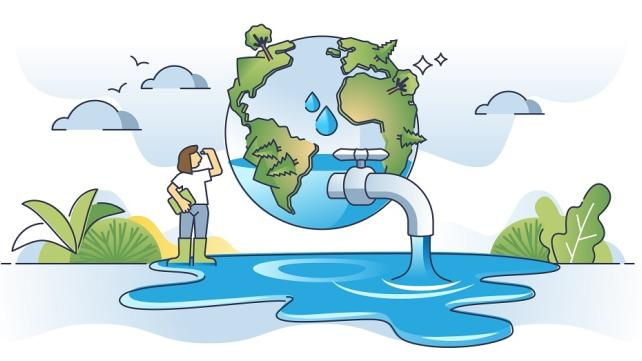

Lesson: The Importance of Water Conservation
Water conservation is essential for ensuring that we have enough clean water to meet the needs of both humans and the environment. Freshwater resources are limited, and as the global population grows, so does the demand for water. By conserving water, we reduce the strain on water supply systems, protect natural ecosystems, and help ensure that water is available for future generations.
Why Water Conservation is Important
- Reduces energy consumption associated with water treatment and distribution.
- Prevents water shortages in areas with limited water supply.
- Helps protect natural habitats for wildlife.
- Reduces the costs of water services for households and industries.
Water Conservation Tips
Below are some simple steps you can take to conserve water in your daily life:
- Fix leaks in your home to prevent water waste.
- Turn off the tap when brushing your teeth or shaving.
- Take shorter showers and install water-efficient showerheads.
- Only run dishwashers and washing machines with full loads.
- Collect rainwater for gardening and outdoor cleaning.
Watch the video above to learn more water conservation strategies that you can implement in your home.
Back to Home